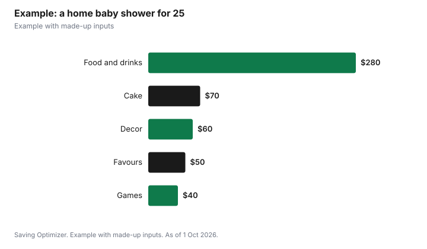

Events · Canada
Baby Shower Costs: Who Pays, Registry Basics and Safe Second-Hand Gifts

A baby shower is usually paid for by whoever hosts it, often a close friend, sister or other relative, and the cost depends mostly on the venue and food. A shower at home with light food and simple decor can cost a couple of hundred dollars; a restaurant or rented room costs more. Co-hosts often split costs. Guests bring gifts, often from a registry. If a gift is second-hand, Health Canada says cribs made before September 1986 should not be used and drop-side cribs have been illegal to sell since 29 December 2016, and Transport Canada advises discarding car seats after their expiry date.
Key takeaways
- A friend or relative usually hosts; co-hosts split costs.
- Home showers with a light menu cost the least.
- Registries reduce duplicate gifts; group gifts suit big items.
- Health Canada: no cribs made before September 1986; no drop-side cribs.
- Transport Canada: discard car seats after their expiry or useful life date; pre-2012 seats may not be sold or given away.
- Example with made-up inputs: a home shower for 25.
Who hosts and pays
Traditionally a close friend or relative hosts, rather than the parents-to-be, though many families now host their own or hold a co-ed shower with both parents. When several people co-host, agree on the budget and how costs are split before booking. Guests are not expected to pay toward the party; their contribution is the gift. Workplaces sometimes hold a small shower with a group gift.
| Format | Main costs | Notes |
|---|---|---|
| Home, afternoon tea or brunch | Food, decor, invitations | Lowest cost |
| Restaurant private room | Set menu, possible minimum | Little cleanup; ask about group gratuity |
| Rented hall or community room | Room rate, food, rentals | Suits large guest lists |
| Virtual or drive-by | Shipping gifts, a small treat | Good for far-flung guests |
| Workplace | Cake, group gift | Short, during work hours |
Keeping costs down
- Choose a brunch or afternoon tea menu instead of a full meal.
- Use digital invitations.
- Keep decor to a few reusable items.
- Ask co-hosts to each bring a dish.
- Limit games to one or two that need few supplies.
- If alcohol is served at a rented hall in Ontario without a liquor licence, a special occasion permit is required; a mocktail menu avoids it.
Registry and gift etiquette
A registry helps guests pick items the parents need and avoids duplicates. Include items at several price points, and consider a fund for bigger items or a group gift for a stroller or crib. Guests can go off-registry, but practical items such as diapers in several sizes, clothing in larger sizes and books are rarely wasted. Thank-you notes are customary; keep a list during gift opening.
Safe second-hand gifts
Hand-me-downs save money, but some items have safety rules. Health Canada says all new and used cribs, cradles and bassinets sold in Canada must meet current safety regulations. Cribs made before September 1986 should not be used, because they do not meet current rules such as slat spacing. As of 29 December 2016, it is illegal to sell, import, manufacture or advertise traditional drop-side cribs in Canada.
| Check | Health Canada guidance |
|---|---|
| Slat spacing | No more than 6 cm apart |
| Corner posts | No higher than 1.5 mm above the sides |
| Mattress gap | 3 cm or less from the sides |
| Crib mattress thickness | No thicker than 15 cm |
| Age | Do not use cribs made before September 1986 |
| Drop-side cribs | Illegal to sell since 29 December 2016 |
For a used crib, cradle or bassinet, or one more than 10 years old, Health Canada says to check for missing, loose, worn or broken parts, make sure it has not been recalled, and get the manufacturer's instructions. It warns against repairing them with parts not from the original manufacturer.
Car seats are different. An archived Transport Canada page says all children's car seats and booster seats sold in Canada carry an expiry or useful life date, that they should not be used past it, and that expired seats should be discarded rather than donated or given to friends or relatives. It also notes that seats made before 1 January 2012 may not be advertised, sold or given away under Health Canada's rules. A new car seat is a good group gift for that reason.
Workplace showers and taxes
If an employer gives an employee a non-cash gift for the birth of a child, the CRA counts it as a special-occasion gift, and non-cash gifts are tax-free up to a total of $500 a year. Cash and near-cash gifts are taxable. Gifts colleagues buy with their own money are not an employer benefit.
Timing and special situations
Ask the parents-to-be when they want the shower. Some prefer it several weeks before the due date so there is time to use gifts and set up the nursery; others prefer to wait until after the baby arrives and hold a meet-the-baby party instead. For an adoption or surrogacy, a celebration after the child comes home avoids uncertainty about timing. For a second or later baby, a smaller gathering, sometimes called a sprinkle, focuses on items the family does not already have, such as diapers, clothing for a different season, or a second car seat.
Respect cultural or personal preferences: some families do not hold showers before a birth. In that case, a gift or meal delivery after the baby arrives is a thoughtful alternative.
Games and program
A simple program fits into an afternoon: food and mingling, one or two games, gift opening and cake. Gift opening can take a long time with many guests; some hosts skip it or display gifts instead. A card station where guests write advice or wishes for the baby costs almost nothing.
Example with made-up inputs
These numbers are an example with made-up inputs. Two friends co-host a home shower for 25 guests. Food and drinks are $280, cake $70, decor $60, games and prizes $40, digital invitations free, and a small favour for each guest $50. The total is $500, or $250 per co-host. Separately, eight guests pool $40 each, $320, toward a new car seat and a fitted crib sheet set from the registry.
| Item | Amount |
|---|---|
| Food and drinks | $280 |
| Cake | $70 |
| Decor | $60 |
| Games and prizes | $40 |
| Favours | $50 |
| Total | $500 |
| Per co-host (2) | $250 |

Steps
- Agree on hosts, budget and split.
- Ask the parents about date, guest list and registry.
- Pick a format and venue.
- Send invitations with registry details.
- Plan a light menu and one or two games.
- Keep a gift list for thank-you notes.
Common mistakes
- Buying a used crib without checking its age and recall status.
- Passing on an expired or pre-2012 car seat.
- Overspending on decor.
- Long gift-opening sessions for big groups.
- Not agreeing on the split among co-hosts.
Related: baby's first-year costs and catering versus potluck.
Sources
- Health Canada, Crib, cradle and bassinet safety, canada.ca (Wayback copy), as of 1 Oct 2026.
- Transport Canada, Children's car seats and booster seats: How long are they safe? (archived), tc.canada.ca, as of 1 Oct 2026.
- Canada Revenue Agency, Gifts, awards, and long-service awards, canada.ca (Wayback copy), as of 1 Oct 2026.
- Alcohol and Gaming Commission of Ontario, Special occasion permits, agco.ca, as of 1 Oct 2026.
- Shower amounts in the example are made-up inputs.
Frequently asked questions
Who pays for a baby shower?
Usually the host, often a close friend or relative. Co-hosts often split the cost.
Can parents host their own baby shower?
Yes. Many families now host their own or hold a co-ed shower.
Is it safe to give a used crib?
Only if it meets current rules. Health Canada says not to use cribs made before September 1986, and drop-side cribs have been illegal to sell since 29 December 2016.
Can I give a used car seat?
Transport Canada advises against using seats past their expiry date, and seats made before 1 January 2012 may not be sold or given away.
Is an employer's baby gift taxable?
A non-cash gift for the birth of a child counts toward the CRA's $500 yearly tax-free limit. Cash is taxable.
How can I keep a baby shower affordable?
Host at home, serve brunch or tea, use digital invitations and keep decor simple.
Researched and drafted with AI assistance and fact-checked against official Canadian sources. How we create content.